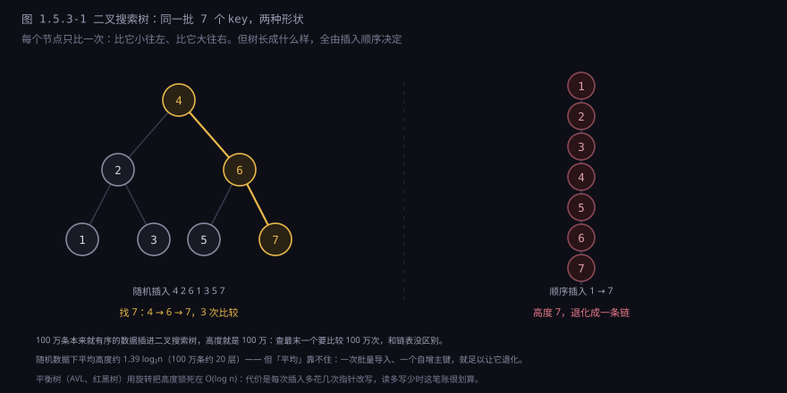
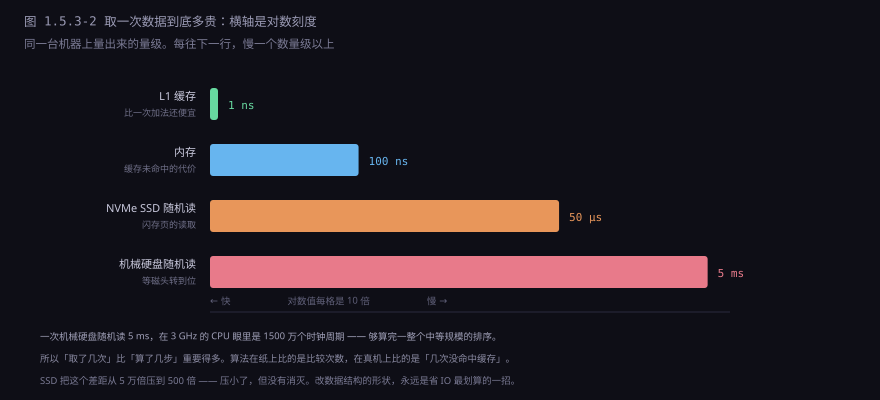
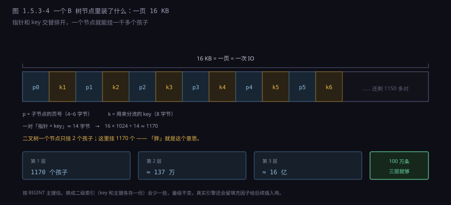
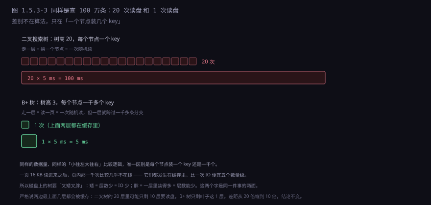
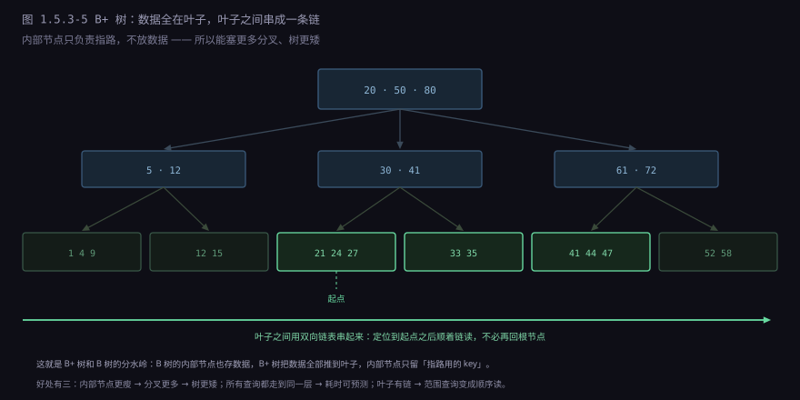
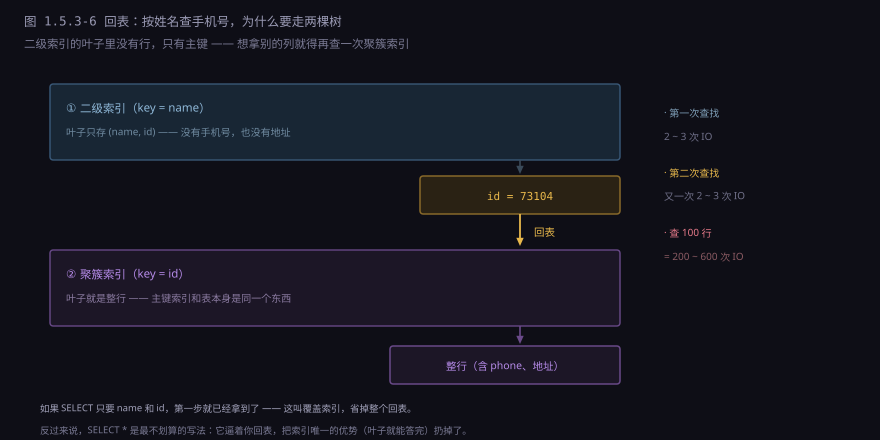

约 0.8 万字 · 6 张图 · 读完你能说清为什么哈希表答不了范围查询、 二叉树为什么会退化、B+ 树为什么一定要「又矮又胖」， 以及索引为什么让查询变快的同时让写入变慢
把需求写具体，问题就清楚了。一张用户表，一百万人，三个查询：
SELECT * FROM user WHERE age BETWEEN 20 AND 30; -- 要一段
SELECT * FROM user ORDER BY created_at DESC LIMIT 20; -- 要顺序
SELECT MIN(age) FROM user WHERE age > 100; -- 要「下一个」哈希表对这三个都只能全表扫。原因不是「没写对」，而是它的位置公式里根本没有大小这个概念： 位置 = h(key) % m。h 的输出是乱的（这是好事，说明分布均匀），取模之后更乱。 两个年龄相差一岁的人，槽位可能差 47 万。
所以顺序不能靠算，只能靠存的时候就按顺序摆好。
一旦摆好了，「20 到 30 这一段」在物理上就是挨着的，
找到开头就能一路读下去，不必管后面还有多少条。
这就是「取一段」的成本为什么是 O(log n + k) 而不是 O(n)：
定位只要 log n，之后读 k 条是顺路，不是搜索。
| 结构 | 按 key 取一个 | 取一段区间 | 按顺序遍历 | 插入一个 |
|---|---|---|---|---|
| 哈希表 | O(1) | 做不到 | 要额外排序 | O(1) |
| 有序数组 | O(log n) | O(log n + k) | O(n) | O(n)，要挪 |
| 二叉搜索树 | 平均 O(log n) | O(log n + k) | O(n) | 平均 O(log n) |
| B+ 树 | O(logm n) | O(logm n + k) | O(n) | O(logm n) |
这张表最该盯的是「取一段区间」那一列。 哈希表是唯一一个写着「做不到」的——注意不是「慢」，是做不到。 其余三种都能做，区别只在常数。 而这张表还看不出另一个东西：这三种结构在内存里差几倍，在磁盘上能差几十倍。 那是这一节后半段的全部内容。
最直接的想法：把数据按 key 排好放在一个数组里，查找用二分。 100 万条，20 次比较就够——每比较一次砍掉一半，2²⁰ ≈ 105 万。 这已经是很漂亮的数字了。
第一个问题是插入。往中间插一个元素，后面所有元素都要往后挪一格。 平均挪 50 万条，一条 4 字节，就是 2 MB 的内存拷贝。 如果一天要插 100 万条，搬运量是 2 TB。
但这个理由不够硬。读写比悬殊的系统里（一天查一亿次、插一万次）， 这点拷贝完全可以忍——很多缓存就是这么干的。 所以真正劝退有序数组的，是第二个问题。
二分查找的每一次比较，都是一次跳跃。 下标范围 0 到 100 万，第一次跳 50 万，第二次跳 25 万或 75 万， 第三次跳 12.5 万……每次落点和上一次之间毫无关系。 在内存里这不要紧，因为 RAM 的访问延迟基本是常数（几十纳秒），跳哪儿都一样。 但在磁盘上，每个落点都是一个不同的 4 KB 页，每次都要一次随机 IO。
二分查找 100 万条：
比较 20 次 → 落在 20 个互不相邻的位置
在内存里：20 × 100 ns = 2 µs
在机械盘上：20 × 5 ms = 100 ms ← 慢 5 万倍一百毫秒。查一条记录要一百毫秒，这个系统就没法用了。 而更气人的是：二叉树也是 20 次跳跃。 它并没有比有序数组好，只是把「20 次比较」换成了「20 次节点访问」—— 在磁盘上，20 次节点访问就是 20 次随机 IO，一模一样。
所以出路只有一条：把跳跃的次数降下来。 不是让每次跳跃变便宜（那要靠硬件），而是让 20 次变成 3 次。 这句话就是后面三节的全部内容。
规则一句话：每个节点，左边子树全比它小，右边子树全比它大。
struct Node {
int key;
char* value;
Node* left;
Node* right;
};查找就是从根开始比：比当前节点小往左走，大往右走，相等就命中。 每走一步，就排除掉一整棵子树——这是它比链表强的地方。 插入也一样：按查找的路线走到空位，挂上去。
但它真正的价值不是「查找快」，而是中序遍历出来就是有序的。 这个性质把「顺序」编码进了形状里：一个节点左边的所有东西都比它小， 所以「把整棵树按大小念一遍」不需要额外排序，沿着左边一路走到底，回溯，再走右边就行。
void inorder(Node* n, void (*visit)(Node*)) {
if (!n) return;
inorder(n->left, visit); // 先念完所有比它小的
visit(n); // 再念它自己
inorder(n->right, visit); // 最后念所有比它大的
}范围查询也就有了：找到 ≥ 20 的最小节点，然后沿着中序后继一路往下走， 直到遇到超过 30 的停下。不用重新搜索，一次定位加 k 步。 这是哈希表永远给不了的东西。
删除要分三种情况，第三种最容易写错：
| 情况 | 怎么删 | 为什么 |
|---|---|---|
| 叶子节点 | 直接摘掉，父节点的指针置空 | 没有孩子要安置 |
| 只有一个孩子 | 让孩子顶替自己的位置 | 孩子子树里所有 key 仍然满足左右大小关系 |
| 有两个孩子 | 找右子树里最小的节点（中序后继），把它的 key 抄过来，再删掉那个后继 | 后继是右子树里最小的，抄过来仍然满足「左小右大」；而后继最多只有一个右孩子，退化成前两种情况 |
到这里一切都很美好。问题是：这棵树的形状，完全由插入顺序决定。 同样是 7 个 key，随机插进去大约长成一棵平衡的树； 按 1、2、3、4、5、6、7 的顺序插进去，每个新节点都比前一个大， 于是永远挂在最右边，最终变成一条链。

这不是「只有新手才会踩」的坑。真正天然有序的输入多得是： 自增主键、递增的时间戳、按顺序落盘的日志、从有序文件批量导入、 以及任何一次「先按 id 排好序再插进去」的数据迁移。 只要输入有序，二叉搜索树就退化成链表，而它的接口看起来还是 O(log n)。
修法很直接：每次插入或删除之后检查一下，一旦发现某处「一边太高」，就改几个指针把它扳回来。
这个「扳」的动作叫旋转。以右旋为例（左边太高了）： 失衡节点 z 的左孩子 y 升上来当这一段的根，z 降下去当 y 的右孩子， 而 y 原来那个右子树 B，改挂到 z 的左边。
右旋（z 的左子树太高）只改三个指针，顺序不能乱：
1. y.right 改挂到 z.left -- 先把 B 从 y 身上摘下来
2. z.left 改指向 B -- B 里所有 key 都在 y 和 z 之间，挂这儿合法
3. z 的父节点（或根指针）改成指向 y为什么这样改还合法？因为 B 里的所有 key 都大于 y 且小于 z。 把它挂到 z 的左边，「左小右大」依然成立。 这就是旋转能成立的全部理由——它没有改变任何 key 的相对顺序，只是换了父子关系。 而「顺序」是二叉搜索树唯一的约束，只要它没被破坏，形状随便改。
两个流派，区别在于「允许多不平衡」：
| 流派 | 约束 | 结果 | 代价 |
|---|---|---|---|
| AVL 树 | 任何节点左右子树高度差 ≤ 1 | 最严格，树最矮，查找最快 | 插入删除经常要连着转好几次 |
| 红黑树 | 根黑、红节点不能相邻、从根到每个空叶子的黑节点数相同 | 最长路径 ≤ 最短路径的 2 倍，高度仍是 O(log n) | 树比 AVL 略高（约 1.4 倍） |
红黑树的约束看着绕，效果很实在：约束松了，需要修的次数就少了。 插入最多旋转 2 次，删除最多 3 次——都是常数，与规模无关。 AVL 则可能一路转回根。所以： 读远多于写，用 AVL 划算；通用场景，红黑树是默认答案。
红黑树就在你每天用的东西里：C++ 的 std::map 和 std::set、
Java 的 TreeMap 和 TreeSet、
Linux 内核的 CFS 调度器运行队列、epoll 的就绪列表、高精度定时器，
还有 Nginx 的定时器。它们要的都是同一件事：一个能按顺序遍历、能取区间、插入也不太慢的容器。
到这里，树的理论部分其实已经讲完了。但真实数据库里的树，长得跟上面讲的完全不一样。
差别来自一件事：存储介质换了，账本就得换。 在内存里，访问任何地址都是几十纳秒上下，跳哪儿都差不多； 在磁盘上，「读第 13 页」和「读第 14 页」之间隔着一整个机械动作。

5 毫秒，在 3 GHz 的 CPU 眼里是 1500 万个时钟周期。 这段时间里 CPU 能做几百万次比较。 换句话说：只要能把「读几次」降下来，页内多做几百次、几千次比较完全是白送的。
这句话是整个 B 树存在的理由。算法课本上「比较次数越少越好」的准则， 在磁盘面前直接失效了——因为比较几乎免费，读盘贵得离谱。 我们要优化的不是「比较几次」，而是「读几次盘」。
1972 年，波音科学研究所的 Rudolf Bayer 和 Edward McCreight 发了一篇论文， 题目叫《Organization and Maintenance of Large Ordered Indices》。 他们要解决的问题很具体：怎么在磁盘上维护一个既有序、又能快速随机访问的索引。 他们给出的结构后来被叫做 B 树。
核心想法一句话：既然读一次那么贵，那就一次多读点。
二叉搜索树的一个节点是「一个 key + 两个指针」，十几个字节。 读它要花 5 ms，然后只用了十几个字节里的一点点信息，太亏了。 B 树的做法是把一个节点撑成一整页——InnoDB 里是 16 KB—— 这一页里塞几百上千个 key，外加同样多的子指针。 一次 IO 把整页读进内存，然后在这页里做几百次比较，全部免费。

分叉数一变，层数就塌下来了。同样是装 n 条记录：
二叉树：分叉 2，100 万条 → 高度 20
B 树：分叉 1170，100 万条 → 高度 3
B 树：分叉 1170，10 亿条 → 高度 3
B 树：分叉 1170，1000 亿条 → 高度 41170 的三次方是 16 亿。也就是说，从一百万条到十六亿条，树高只涨了一层。 而二叉树从一百万涨到十六亿，高度从 20 涨到 31——每翻一倍就多一层，每层都是一次读盘。

这就是「又矮又胖」四个字的全部含义。 矮和胖不是两个优点，是同一件事的两面：因为胖，所以能矮。 而矮是目的——层数就是 IO 次数，IO 次数就是时间。
在 B 树里查找，每一层做的事是这样的： 把这一页的 key 读进内存（已经在了），在里面找一个区间， 让目标 key 落在 ki 和 ki+1 之间，然后跟着 pi 往下走。 页内有上千个 key，线性扫太笨，所以实际实现都是在页内二分。 InnoDB 更进一步：每页末尾有一小块「页目录」，把记录按组编号， 页内查找先二分页目录定位到组，再在组内线性找——比纯二分少几次 cache miss。
B 树的内部节点也存数据。这就浪费了：一行数据可能几百字节， 占掉了本该用来放指针的空间，分叉数就从一千多掉到几十。 数据库的解法很干脆——把数据全部推到叶子，内部节点只留指路用的 key。 这就是 B+ 树。

三个好处，一个比一个实在：
一、内部节点更瘦，分叉更多，树更矮。 内部节点只存 key 和页号，不存行数据，一页能放的分叉数比 B 树多一个量级。 B 树可能要 4 层的地方，B+ 树 3 层就够了。
二、所有查询都走到同一层，耗时可预测。 B 树的记录可能在第 2 层就被找到，也可能要下到第 5 层。 B+ 树永远走到叶子，路径长度完全一致。 这在工程上很重要——数据库要估算查询代价、要做超时控制，一个「有时 1 ms 有时 8 ms」的结构很难安排。
三、叶子有链，范围查询变成顺序读。 这一条最值钱，下一节单独算。
现在几乎所有正经存储都用 B+ 树或它的变体： MySQL 的 InnoDB、Oracle、SQL Server、SQLite； PostgreSQL 的 B 树在实现上也是「数据全在叶子」，属于同一族。 文件系统里也一样：NTFS 的目录索引、ext4 的 extent 树、Btrfs、XFS， 全是 B 树家族——因为它们要解决的问题和数据库一模一样： 在一块又慢又只能按块读的设备上，维护一个有序的映射。
把上一节的图拆成动作。查询是这样的：
SELECT * FROM user WHERE id BETWEEN 500 AND 800;第一步，定位起点。 从根节点开始，在每一层的页里二分，找到「第一个 ≥ 500 的孩子指针」，跟着下去。 三层走完，落到某个叶子页。这一步是 2~3 次 IO，而且上面两层基本都在缓存里， 真读盘的通常只有最后一页。
第二步，顺着叶子链往右读。 在叶子里找到 500，然后不需要再回根节点——下一页的指针就在这一页里。 一路往右，直到遇到第一个大于 800 的 key，停。
第二步的性质和第一步完全不同：它是顺序读。 页在磁盘上是挨着的，读一页的时候操作系统和磁盘控制器会顺手把后面几页预读进缓存。 所以取 100 条连续记录，实际可能只发生 1~2 次 IO。
取 id 从 500 到 800 的 300 条：
走树定位起点 → 2~3 次 IO，多数命中缓存
顺着叶子链读 300 条 → 约 3 次 IO，每页装一百来条，顺序读
合计 → 约 5 次
同样 300 条，如果散在表里随机取：
300 次随机 IO → 约 1.5 秒
差两个数量级。这就是为什么 WHERE id IN (...) 有时候反而比
BETWEEN 慢——不是因为 IN 写得不好，是因为 IN 里的 id 如果散得开，
数据库就得做 300 次随机定位，而不是一次顺序扫。
LIMIT 1000000, 10 看起来只要 10 条，但数据库必须先顺着叶子链走 100 万零 10 条，
把前面 100 万条全部读出来再丢掉。你付的是 100 万条的钱，拿的是 10 条的结果。
WHERE id > 上次最后一个 id LIMIT 10——
这样每次都只做一次定位加 10 步。这不是什么优化技巧，
是 B+ 树的叶子链结构决定的：它能带你往前走，但不能让你跳。
到这里讲的都是读。但 B+ 树是会变的，而「变」的代价比「读」复杂得多。
往一个叶子页里插数据，如果这一页已经装满了（16 KB 塞不下了），就得分裂： 把这一页的记录分成两半，一半留在原页，一半搬到新页，然后在父节点里插一个新的分隔 key 和指针。 如果父节点也满了，就继续往上分裂；如果根节点也满了，树就长高一层。
这解释了一件事：树不是每插一条就长高，只在根分裂的时候才长高。 从高度 h 到 h+1 之间，至少插进了 1170h 条记录。 所以「树高」这个数字非常稳定，不会因为一次批量导入就暴涨。
分裂有个副作用：分出来的两页各只有一半满，空间利用率掉到 50%。 而分裂发生得多不多，取决于插入的顺序。
| 插入方式 | 分裂发生在哪 | 页利用率 | 页在磁盘上的位置 |
|---|---|---|---|
| 自增主键（顺序） | 永远是最右边那一页 | 接近 100% | 连续，顺序写 |
| UUID（随机） | 散落在所有叶子页上 | 50%~70% | 乱跳，写入变成随机 IO |
| 时间戳 + 业务 id | 集中在一小段 | 较高 | 基本连续 |
这就是「InnoDB 里自增主键比 UUID 快」的真正原因。 不是因为 UUID 的哈希分布不好——它的分布好得很。 是因为它把 B+ 树的叶子页打碎了： 每次插入都可能落在一个随机的页上，而那个页大概率不在缓存里， 于是每次 INSERT 都要读一页、改一页、写一页，而且写的位置还是随机的。
顺序主键则相反：它永远在写「最右边那一页」，那一页永远在缓存里， 攒够了刷一次盘，而且刷的位置是连续的。 同样的数据量，写入吞吐能差好几倍。
删除是反过来的：页里的记录越来越少，最后要合并（merge）—— 把两个半空的页并成一页，父节点里删掉一个指针。 不做合并的话，树会越来越稀，层数不变但每层扫的东西变多，最后退化成一堆空页。 有些系统为了省事不立即合并，而是等后台任务慢慢整理。
还有一个容易被忽略的成本：写放大。 改一行的某个字段，落到磁盘上是「改这一页」——写整页 16 KB。 加上 WAL 日志（先写日志保证崩溃可恢复）和 doublewrite（先写到一块连续的缓冲区防止页写一半断电）， 改 10 个字节，实际写下去可能是 48 KB。 放大 5000 倍。
对策是缓冲池（buffer pool）：内存里缓存一批页，改的时候只改内存， 被改过的页标记成「脏页」，攒着一起刷回去。 所以数据库的「写入」很多时候只是写内存 + 追加一条日志，真正的磁盘写是异步的、批量的、顺序的。 这也解释了为什么数据库重启后要「预热」——缓冲池是空的，所有查询都要真读盘。
讲到这里，结论好像应该是「索引越多越好」。恰恰相反。
每一个索引，都是一棵独立的 B+ 树。 建 10 个索引，就有 10 棵树；每次 INSERT，10 棵树都要插一次， 每一棵都可能分裂、都可能写放大。 索引的成本有三块：空间（一棵树能到几个 GB）、 写入（每条记录要维护所有相关的树）、 以及优化器的选择成本（可选路径太多时，估算代价本身也要时间）。
然后是回表。要理解它，得先知道 InnoDB 有两类索引：
聚簇索引（clustered index）：就是主键索引。 它的叶子节点里存的是整行数据。换句话说，表本身就是这棵 B+ 树， 「表」和「主键索引」是同一个东西，没有额外的一份数据。
二级索引（secondary index）：你自己建的普通索引。 它的叶子里存的是索引列的值 + 主键值，不存整行。
所以按姓名查手机号，要走两棵树：先在 name 索引里找到主键 73104， 再拿 73104 去主键索引里查整行。这就是回表。

反过来，如果 SELECT 要的列全在索引里，第一步就答完了，不用回表。
这叫覆盖索引。
SELECT id, name FROM user WHERE name = ? 不需要回表，
SELECT * FROM user WHERE name = ? 需要。
所以 SELECT * 是最不划算的写法——它把索引唯一的优势（叶子就能答完）扔掉了。
联合索引的规则，也是从「叶子里的排列顺序」推出来的。
INDEX idx_abc (a, b, c) -- 叶子按 (a, b, c) 的字典序排列
WHERE a = 1 ✅ 能用（a 在最前面，有序）
WHERE a = 1 AND b = 2 ✅ 能用
WHERE a = 1 AND b = 2 AND c = 3 ✅ 能用，完全命中
WHERE a = 1 AND c = 3 ⚠️ 只能用 a，c 要在结果里再筛
WHERE b = 2 ❌ 用不了（b 只在 a 相同的前提下才有顺序）「最左前缀」不是什么规定，是字典序的直接后果。 想想一本按「姓、名」排序的通讯录：你能快速翻到所有姓张的， 也能快速翻到姓张名伟的；但你没法快速翻到「所有名字叫伟的」—— 因为「伟」在书里的位置取决于前面的姓。
还有一个常被忽略的因素：区分度。 索引的价值在于「一次定位能排除掉多少行」。 性别列只有两个值，索引查出来 50 万行，然后要回 50 万次表—— 比全表扫还慢。优化器算完这笔账，会直接放弃索引。 经验值是：不同值的个数占总行数低于百分之一到十的列，索引收益很小。
最后是「索引失效」最常见的那几种情况，它们看起来互不相干，其实原因是同一个：
| 写法 | 为什么用不上索引 |
|---|---|
WHERE YEAR(created_at) = 2024 | 索引里存的是原始时间，不是年份。要先算再比，就没法用「有序」定位 |
WHERE phone = 13800000000（列是 varchar） | MySQL 会把列转成数字再比，等于对每一行做了一次函数运算 |
WHERE name LIKE '%张%' | 前面有通配符，起点不确定，B+ 树不知道从哪儿开始 |
WHERE a = 1 OR b = 2（b 没索引） | OR 要求两边都能快速定位，一边不行就只能全表扫 |
共同点：索引里存的是列的原值。 一旦你要求「先把值加工一下再比较」，或者「从中间开始找」， B+ 树就没法用「有序」这条唯一的武器了。 它不是变慢了，是根本没法用——只能退回全表扫。
B+ 树能干的，说到底只有一类查询：在一维、可比较、排好序的东西里找一段。 把这条标准拿去量其他的需求，就知道它撑不住什么了。
| 需求 | 为什么 B+ 树不行 | 实际用什么 |
|---|---|---|
| 全文检索：包含某几个词的文档 | 单词之间没有大小顺序，没法二分剪枝 | 倒排索引（词 → 文档列表），再按相关度排序 |
| 附近 1 公里的店 | 距离是二维的，一维有序剪不掉枝 | R 树、四叉树，或 GeoHash 把二维压成一维格子再套 B+ 树 |
| 最相似的 10 个向量 | 没有「比它大 / 比它小」，只有「离它多远」 | HNSW、IVF 这类近似最近邻结构 |
| A 到 B 有几条路径 | 关系不是顺序，是网 | 邻接表 + 图算法（BFS、DFS、最短路） |
这四个的共同点是：查询里没有「顺序」可用。 B+ 树的全部威力来自「排好了序，所以一比就能砍掉一半」。 没有顺序，它就退化成一棵普通的树，甚至还不如哈希表。
所以「给这一列加个索引」不是万能的。加之前先问一句： 我要的这个查询，本质上是不是「在一维有序的东西里找一段」？ 如果答案是否，那索引加得再多也没用，你得换一个结构。
回头看这一路的数字：
哈希表 1 次计算 + 1 次访问，但没有顺序
二叉树 20 次访问，每次一个节点
B+ 树 3 次访问，每次 16 KB
B+ 树范围 3 次定位 + 顺序读每一步都在算同一件事：几次操作，每次多贵。 时间就是这两个数乘起来。而这两个数里，能大幅改动的从来不是「几次」， 而是「每次多贵」——介质一换，最优结构就得跟着换。
但这里有个问题一直悬着没答：O(log₂ n) 和 O(log₁₁₇₀ n)，
在课本上都写成 O(log n)，是同一个复杂度等级。
既然同一个等级，为什么工程上要为了 20 和 3 这点差别，把整个数据结构推倒重来？
答案在下一节：大 O 只说「增长趋势」，明确告诉你「常数因子不算」。 可在真实世界里，那个被约定「不算」的常数，经常才是主角—— 它可以是 20 倍，也可以是 5 万倍。
LIMIT 1000000, 10 很慢？正确的写法是什么？WHERE YEAR(created_at) = 2024 用不上索引？h(key) % m 算出来的，与 key 的大小、与别的 key 在哪儿都无关。相邻的年龄会散落到表的两头，一段连续区间被拆成上千个碎片。它只能全表扫。WHERE id > 上次最后 id LIMIT 10，每次只做一次定位加 10 步。created_at 的原值，不是年份。写成 YEAR(created_at) 等于要求「先对每一行算一次函数再比较」，B+ 树没法用「有序」来定位，只能全表扫。改写成 created_at >= '2024-01-01' AND created_at < '2025-01-01' 就能用上。